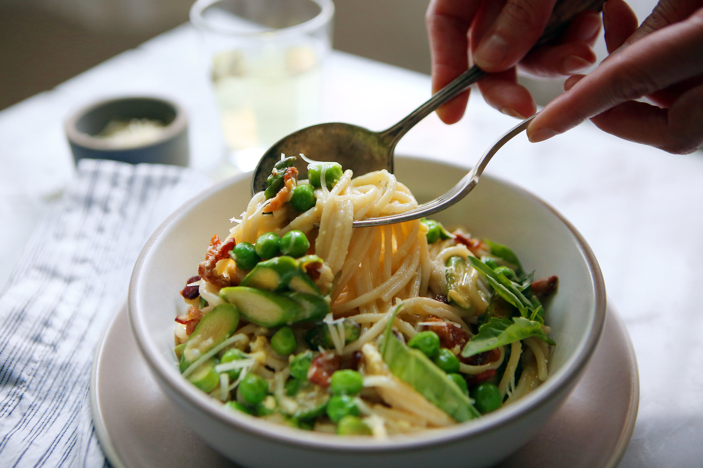

Springtime Spaghetti

This spring spaghetti features zucchini and carrots sautéed in butter and mixed in a
creamy sauce. This is a great side dish that goes really well with barbeque.
Ingredients
- 8 ounces spaghetti
- 2 tablespoons butter
- 3 large carrots, julienned
- 1 large zucchini, julienned
- 2 teaspoons minced garlic
- ¾ cup heavy cream
- ¾ cup grated Parmesan cheese
- 1 tablespoon chopped fresh dill
Steps
- Bring a large pot of lightly salted water to a boil. Cook spaghetti in
boiling water until tender yet firm to the bite, 8 to 10 minutes. Drain and set aside.
- Melt butter in a large skillet over medium heat. Sauté
carrots, zucchini, and garlic in hot butter until tender. Stir
in heavy cream, Parmesan cheese, and dill. Cook and stir until thickened.
Add cooked spaghetti and mix until evenly coated.
Home